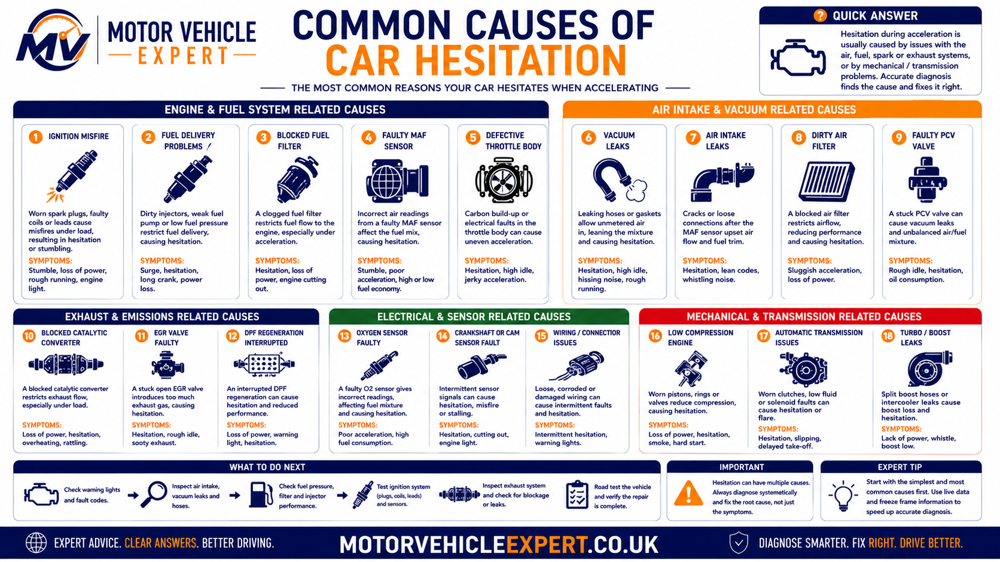
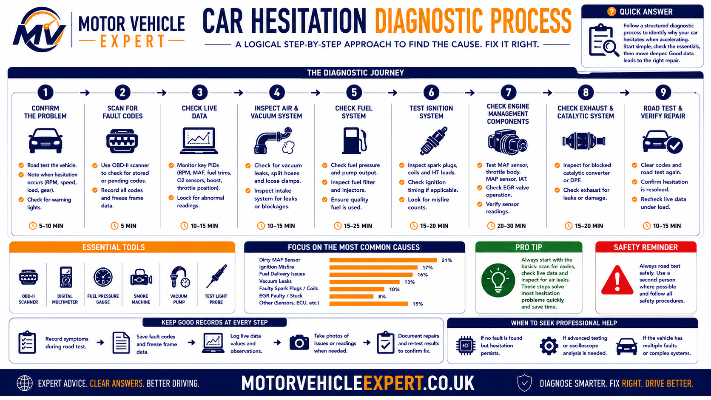

Acceleration hesitation develops when the engine cannot produce the
torque requested by the driver at the moment load increases. The
problem may begin with weak ignition, insufficient fuel pressure,
incorrect airflow measurement, restricted intake flow, unstable turbo
boost, excessive exhaust-gas recirculation or a mechanical engine
fault.
Several faults can create almost identical driving symptoms. A weak
ignition coil, restricted injector, leaking boost hose and inaccurate
airflow sensor may all make a vehicle feel flat or jerky under load.
The correct starting point is therefore the symptom pattern and test
data, not the name of a component found in a fault-code description.
Cause Overview
Common systems behind acceleration hesitation
The diagram below groups the principal causes by system so that the
complaint can be matched to the areas most capable of producing it.

Figure 2: Common causes of a car hesitating when accelerating,
grouped by ignition, fuel, airflow, throttle, turbo and emissions
systems.
Ignition and fuel faults often become more noticeable as engine load
increases. Airflow, throttle and boost faults more commonly disturb
the relationship between accelerator demand and actual engine
response. EGR, exhaust restriction and mechanical condition can
create broader weakness that may initially be described as
hesitation.
Common on Petrol Engines
Ignition breakdown
Worn spark plugs, weak ignition coils, damaged leads or poor coil
connections can fail when cylinder pressure rises during
acceleration.
Typical pattern
Jerking, misfire, uneven exhaust note and hesitation under heavier
throttle.
Catalytic converter risk
Petrol and Diesel
Insufficient fuel delivery
Weak pumps, restricted filters, low rail pressure or injector
faults can prevent the engine receiving the required fuel volume
under load.
Typical pattern
Flat acceleration, surging, difficult starting or reduced power at
higher engine speed.
Pressure testing required
Air Measurement
MAF or MAP sensor error
Incorrect airflow or intake-pressure data may cause the engine
control unit to calculate the wrong fuelling, throttle or boost
response.
Typical pattern
Delayed throttle response, flat spots, poor fuel economy or limp
mode.
Check plausibility first
Intake System
Air or vacuum leak
Split hoses, loose clamps, leaking manifolds and failed breather
components can allow unmeasured air to enter the engine.
Typical pattern
Lean running, unstable idle, hesitation from low speed and positive
fuel trims.
Smoke test useful
Throttle Control
Dirty or faulty throttle body
Carbon deposits, throttle-motor faults or position disagreement
can prevent the throttle plate following accelerator demand
correctly.
Typical pattern
Initial pause, unstable idle, poor low-speed response or restricted
power.
Adaptation may be required
Turbocharged Engines
Boost leak or control fault
Split charge pipes, leaking intercoolers, sticking actuators or
incorrect boost control can delay or interrupt turbo pressure.
Typical pattern
Hissing, smoke, late power delivery, sudden surging or limp mode.
Inspect charge-air system
Emissions Control
EGR valve fault
An EGR valve that remains open when acceleration is requested can
dilute the intake charge and reduce available oxygen.
Typical pattern
Hesitation at low engine speed, smoke, rough running and weak
response.
Confirm commanded position
Exhaust Restriction
Blocked catalytic converter or DPF
Excessive exhaust backpressure prevents the engine clearing gases
efficiently and reduces its ability to produce power.
Typical pattern
Progressive weakness, poor high-speed performance, heat and
possible warning lights.
Do not ignore overheating
Mechanical Condition
Compression or timing fault
Low compression, incorrect valve timing or worn engine components
may reduce torque even when the electronic controls appear normal.
Typical pattern
Persistent weakness, difficult starting, uneven running and poor
cylinder contribution.
Mechanical testing required
Symptom pattern
Most likely systems
Useful confirmation
Do not assume
Jerks only under heavy load
Ignition, injectors or fuel pressure
Misfire counters, plug inspection and pressure data
That a stored cylinder code proves the coil is faulty
Pauses immediately after throttle input
Throttle, airflow or intake leak
Commanded versus actual throttle and airflow response
That throttle cleaning will fix every delayed response
Power arrives suddenly after a delay
Turbo boost or charge-air system
Requested versus actual boost and pressure testing
That normal turbo lag explains severe hesitation
Weak at higher engine speed
Fuel restriction, boost loss or exhaust blockage
Fuel pressure, boost data and exhaust backpressure
That the air filter is the only possible restriction
Worse when hot
Coil breakdown, pump weakness or heat-sensitive sensor
Testing during the hot-fault condition
That a cold workshop test has ruled the system out
No fault codes stored
Intermittent, mechanical or plausibility fault
Live data capture and controlled reproduction
That no code means no fault exists
Workshop principle: verify the failure at the point it occurs
A vehicle that hesitates only when warm, uphill or above a particular
engine speed should be tested under those conditions. Static checks
may show normal values because the component is not being subjected
to the load, heat or flow demand that exposes the fault.
The technician should reproduce the complaint safely, monitor the
systems most likely to be involved and identify which value first
moves away from its expected range. This is more reliable than
replacing several commonly associated parts and waiting to see
whether the symptom disappears.
Ignition System
How ignition faults cause hesitation under acceleration
Petrol engines require a strong, correctly timed spark to ignite the
compressed air and fuel mixture. As throttle opening and engine load
increase, cylinder pressure rises and the voltage required to bridge
the spark-plug gap also increases. An ignition component that appears
satisfactory at idle may therefore fail only during acceleration.
This load-sensitive behaviour is why worn spark plugs and weakening
ignition coils commonly produce hesitation, jerking or misfire when
climbing a hill, accelerating in a high gear or applying full
throttle.
Service Item
Worn spark plugs
Electrode wear increases the gap and raises the voltage needed to
create a reliable spark.
Common signs
Hesitation under load, difficult starting, rough idle and reduced
fuel economy.
Check type and gap
Load-Sensitive Fault
Weak ignition coil
Internal insulation or winding failure may allow the coil to break
down when high secondary voltage is demanded.
Common signs
Jerking, cylinder-specific misfire data and a flashing engine
management light.
Avoid prolonged misfire
Older Ignition Systems
Damaged leads or connections
Cracked insulation, corrosion, poor terminals or moisture can
allow ignition voltage to escape before reaching the spark plug.
Common signs
Worse running in damp weather, visible tracking marks and
intermittent misfire.
Inspect in poor light
Mixture Related
Lean combustion misfire
A cylinder may be recorded as misfiring because insufficient fuel
or excess air makes the mixture too weak to burn consistently.
Common signs
Positive fuel trims, hesitation and several cylinders affected
rather than one isolated coil.
Check fuelling before coils
Cylinder Specific
Injector-related misfire
Restricted, leaking or electrically faulty injectors can cause one
cylinder to contribute less torque during acceleration.
Common signs
Repeated misfire on one cylinder despite known-good ignition
components.
Confirm injector operation
Mechanical Cause
Low cylinder compression
Valve leakage, piston wear or timing problems can imitate an
ignition misfire because the cylinder cannot produce normal
torque.
Common signs
Persistent cylinder imbalance that does not move when coils or
plugs are exchanged.
Compression test required
A misfire code identifies a cylinder, not automatically the failed part
A code such as P0301 indicates that combustion irregularity has been
detected on cylinder one. It does not prove that cylinder one's
ignition coil is defective. The cause may instead be the spark plug,
injector, wiring, intake leakage, compression or another condition
affecting combustion.
1
Confirm the affected cylinder
Read stored and pending codes, inspect freeze-frame information and
monitor cylinder misfire counters during the conditions that
reproduce the complaint.
2
Inspect the spark plug
Check electrode wear, gap, deposits, oil contamination, overheating
and whether the installed plug is correct for the engine.
3
Test the ignition component
Where suitable, move the coil to another cylinder and observe
whether the misfire follows it. Use output testing where component
swapping is inappropriate.
4
Check fuel and compression
If the ignition system is proven serviceable, confirm injector
operation, intake sealing and mechanical cylinder condition before
replacing further parts.
Ignition-related pattern
Likely direction
Recommended test
Repair priority
Misfire begins only under heavy throttle
Weak coil or excessive spark-plug gap
Load test ignition output and inspect plugs
High
Misfire worsens when engine is hot
Heat-sensitive coil or electrical connection
Repeat testing at full operating temperature
High
Fault moves when coil is exchanged
Coil failure strongly indicated
Confirm wiring and replace the proven component
High
Fault remains on the same cylinder
Plug, injector, wiring or compression
Continue cylinder-specific testing
High
Several cylinders misfire together
Fuel, airflow, timing or shared supply fault
Check common inputs and fuel delivery
High
Do not repeatedly accelerate a severely misfiring engine
Unburned fuel can enter the catalytic converter and raise its
temperature rapidly. What begins as a relatively contained ignition
repair can become a much more expensive emissions-system repair if
the vehicle continues to be driven hard.
Fuel Delivery
How fuel-system faults cause hesitation and flat acceleration
The fuel system must maintain the correct pressure and flow as engine
demand increases. A vehicle may idle normally because fuel demand is
low, yet hesitate during acceleration when the pump, filter, injector
or pressure-control system can no longer supply the required quantity.
Petrol port-injection, petrol direct-injection and common-rail diesel
systems operate differently, but the diagnostic principle remains the
same: compare requested fuel delivery with the pressure and combustion
response actually achieved.
Supply Side
Weak fuel pump
A worn pump may provide enough fuel at idle but fail to maintain
volume and pressure when acceleration demand rises.
Typical pattern
Hesitation at high load, long cranking, surging or power loss at
higher engine speed.
Measure pressure under load
Flow Restriction
Blocked fuel filter
A restricted filter reduces available flow and may force the pump
to work harder to maintain system pressure.
Typical pattern
Progressive weakness, poor motorway acceleration and pressure drop
under load.
Check service history
Cylinder Delivery
Restricted injector
Deposits or internal damage can reduce fuel delivery to one or more
cylinders, particularly during high-demand operation.
Typical pattern
Cylinder imbalance, hesitation, rough running and lean combustion.
Balance testing required
Pressure Control
Rail-pressure fault
Pumps, regulators, metering valves, pressure sensors or excessive
injector return flow can prevent target rail pressure being met.
Typical pattern
Limp mode, difficult starting, hesitation and fuel-pressure fault
codes.
Requested vs actual pressure
Fuel Quality
Contaminated or incorrect fuel
Water, stale fuel or incorrect fuel type can disturb combustion
and damage high-pressure components.
Typical pattern
Fault begins shortly after refuelling, with rough running, smoke or
poor starting.
Stop if misfuel suspected
Electrical Control
Injector wiring fault
Loose terminals, damaged wiring or control-module output faults can
interrupt injector operation intermittently.
Typical pattern
Sudden jerking, cylinder cut-out and an intermittent electrical
fault code.
Test circuit under load
Fuel pressure must be checked during the hesitation
A normal pressure reading at idle does not prove that the system can
meet acceleration demand. The useful test is whether low-pressure
supply and high-pressure rail values remain within specification
while the fault is occurring.
Fuel-system clue
Possible cause
Useful workshop check
Diagnostic caution
Pressure falls as throttle opens
Pump weakness, restriction or control fault
Pressure and flow test under load
Do not judge the pump from idle pressure alone
One cylinder shows poor contribution
Injector, ignition or compression fault
Injector balance and cylinder comparison
Do not replace the injector before proving delivery
Rail pressure fails to reach target
High-pressure pump, regulator or leak-off
Requested versus actual pressure and return-flow test
Follow manufacturer safety procedures
Fault begins after refuelling
Contamination, misfuel or poor fuel quality
Fuel sample and system inspection
Continuing to run may spread contamination
Positive fuel trims increase under load
Fuel shortage or unmetered air
Compare pressure, airflow and intake sealing
Lean data does not identify the source by itself
High-pressure fuel systems require specialist precautions
Petrol direct-injection and common-rail diesel systems can operate at
extremely high pressure. Pipes and injectors must not be loosened
casually while the system is running or remains pressurised. Proper
test equipment and manufacturer procedures are essential.
Airflow & Throttle
Airflow, intake leaks and throttle faults
Modern engine management relies on accurate information about air
entering the engine and the position of the throttle system. When
those inputs disagree with actual airflow, the control unit may deliver
the wrong fuel quantity, restrict torque or struggle to respond
smoothly to accelerator demand.
These faults often produce delayed response, flat spots or surging
rather than a sharp cylinder-specific misfire. Live-data plausibility
and intake-system testing are therefore particularly important.
Airflow Input
MAF sensor fault
Contamination, ageing or electrical faults can cause the reported
airflow to differ from the volume actually entering the engine.
Typical pattern
Flat acceleration, poor fuel economy, unstable fuelling and
possible limp mode.
Compare expected airflow
Pressure Input
MAP sensor fault
Incorrect manifold-pressure data can disturb fuelling, EGR and
turbo-control calculations.
Typical pattern
Hesitation, boost deviation, smoke and restricted power.
Check key-on plausibility
Unmetered Air
Vacuum or intake leak
Air entering after the airflow meter may not be included in the
engine control unit's fuel calculation.
Typical pattern
Lean codes, positive fuel trims, unstable idle and hesitation from
low speed.
Smoke test the intake
Air Restriction
Blocked air filter
Severe contamination can limit airflow as engine demand rises,
although it is less often the sole cause than commonly assumed.
Typical pattern
Reduced high-load performance and increased intake restriction.
Inspect before replacing
Throttle Plate
Carbon-contaminated throttle body
Deposits around the throttle plate can disturb low-angle airflow
and make precise throttle control more difficult.
Typical pattern
Poor initial response, unstable idle and low-speed hesitation.
Clean only when justified
Electronic Control
Throttle actuator or position fault
A disagreement between requested and measured throttle position
may cause torque limitation or fail-safe operation.
Typical pattern
Warning lights, reduced power and inconsistent accelerator
response.
Check both position tracks
Sensor plausibility matters more than a single reading
A sensor may produce a value that appears numerically possible yet
still be incorrect for the engine speed, load, throttle position and
atmospheric conditions present. Good diagnosis compares related
inputs rather than judging one number in isolation.
1
Check baseline values
Compare intake pressure with atmospheric pressure before starting
and assess airflow at idle against expected engine size and speed.
2
Apply throttle and watch response
Confirm that accelerator position, throttle command, measured
throttle angle and airflow rise smoothly without delay or dropout.
3
Check fuel correction
Excessive positive correction may indicate unmetered air or fuel
shortage. Excessive negative correction may indicate overfuelling
or inaccurate airflow reporting.
4
Pressure-test the intake
Inspect hoses and joints visually, then use smoke or pressure
testing where leakage remains possible but cannot be seen.
Airflow or throttle clue
Likely direction
Confirmation
Repair approach
Airflow value rises too slowly
MAF error, restriction or engine breathing fault
Compare calculated load and known-good values
Test before replacing the sensor
Fuel trims are highly positive at idle
Vacuum or intake leak
Smoke test and inspect breather system
Repair the leak and reassess trims
Commanded throttle and actual throttle disagree
Throttle body, wiring or adaptation fault
Inspect position tracks and actuator response
Follow relearn procedure where required
MAP reading is implausible before starting
Sensor, reference voltage or pressure-path fault
Compare with atmospheric pressure
Check circuit before sensor replacement
Fault disappears when a sensor is disconnected
Substitute strategy masks the symptom
Confirm original signal against specification
Do not treat disconnection as proof
Turbo & Boost
Turbo hesitation, boost leaks and delayed power delivery
Turbocharged engines naturally require a short period to build boost,
but normal turbo lag should not create severe flat spots, repeated
surging, smoke, hissing or sudden loss of power. When boost arrives
much later than expected or repeatedly rises and falls, the complete
charge-air and boost-control system should be inspected.
Diagnosis must compare the pressure requested by the engine control
unit with the pressure actually produced. A low-boost code does not
automatically prove turbocharger failure, and an overboost code does
not automatically prove that the pressure sensor is defective.
Very Common
Split boost hose
A cracked or loose charge-air hose allows compressed air to escape
before reaching the engine.
Typical pattern
Hissing, oily residue around a joint, smoke and weak acceleration.
Pressure-test the system
Charge-Air Cooling
Leaking intercooler
Impact damage, corrosion or split end tanks may create a leak that
becomes significant only as boost pressure rises.
Typical pattern
Progressive boost loss, oil staining and poor high-load
performance.
Inspect under pressure
Control System
Wastegate or actuator fault
Mechanical sticking, vacuum loss or an electronic actuator fault
can prevent the turbo controlling pressure correctly.
Typical pattern
Delayed boost, overboost, underboost or intermittent limp mode.
Check commanded movement
Diesel VGT Systems
Sticking variable vanes
Soot contamination may restrict vane movement and reduce the
turbocharger's ability to control boost across the speed range.
Typical pattern
Weak low-speed response, sudden surge or overboost at higher load.
Confirm actuator range
Sensor Feedback
Incorrect boost-pressure reading
A contaminated or faulty pressure sensor may report boost
inaccurately and disturb control decisions.
Typical pattern
Implausible pressure data, warning lights and inconsistent torque.
Compare sensor plausibility
Turbocharger Condition
Worn or damaged turbo
Bearing wear, compressor damage or internal leakage can reduce
airflow and may introduce oil into the intake or exhaust.
Typical pattern
Whining, smoke, oil consumption and sustained boost loss.
Inspect urgently
Do not condemn the turbocharger before checking the system around it
Boost hoses, intercoolers, vacuum supplies, control solenoids,
actuators, pressure sensors, exhaust restrictions and EGR faults can
all cause incorrect boost. Replacing a turbo without identifying the
true cause may leave the hesitation unchanged.
Requested boost is high but actual boost is low
Suspect charge-air leakage, actuator control, exhaust-energy loss,
intake restriction or reduced turbo output. Pressure-test the
system before assuming internal turbo damage.
Actual boost exceeds the requested value
Suspect sticking vanes, wastegate control, actuator faults or an
incorrect pressure signal. Continued overboost may trigger limp
mode to protect the engine.
The problem may lie in fuel delivery, exhaust restriction,
transmission behaviour or mechanical engine condition rather than
the turbo system.
Turbo-related symptom
Likely first checks
Useful data
Priority
Hissing under acceleration
Boost hoses, clips and intercooler
Pressure or smoke test
Inspect promptly
Late power followed by a surge
Actuator, vane movement and control solenoid
Requested versus actual boost
High
Black smoke with weak acceleration
Air shortage, boost leak or EGR fault
Airflow, boost and EGR position
High
Limp mode during hard acceleration
Underboost or overboost control fault
Freeze-frame and road-test logging
High
Whining noise and oil consumption
Possible internal turbo wear
Shaft, intake and oil-system inspection
Urgent
Normal turbo lag should be predictable and repeatable
A healthy turbocharged engine may deliver less boost at very low
engine speed, but the transition should remain smooth. A pronounced
flat spot, violent surge, smoke, warning light or sudden limp mode
indicates a fault rather than ordinary turbo behaviour.
Fault Patterns
What the timing of the hesitation can reveal
The point at which hesitation appears is often more useful than the
symptom alone. A fault that occurs only when the engine is cold should
not be approached in the same way as one that appears after a long
motorway journey, during full-throttle acceleration or only when the
vehicle is climbing a hill.
Experienced technicians use these patterns to decide which systems
should be monitored first. The objective is not to guess the failed
component, but to reproduce the fault under controlled conditions and
identify which input, command or mechanical response first moves away
from its expected value.
Cold Engine
Hesitation only when cold
Cold running requires additional fuelling and depends heavily on
accurate coolant-temperature, intake-temperature and airflow data.
A fault appearing immediately after moving off may involve
throttle response, clutch engagement, low-speed fuelling or engine
movement affecting wiring and hoses.
A sudden change after refuelling raises concern about fuel quality,
contamination, incorrect fuel or evaporative-emissions faults.
Likely directions
Misfuel, water contamination, stale fuel, tank-venting fault or
purge-valve operation.
Investigate before continued driving
When the hesitation occurs
Systems to prioritise
Best diagnostic approach
Common mistake
Only when cold
Temperature inputs, fuelling and ignition
Begin testing before the engine warms
Allowing the workshop to warm the vehicle first
Only when fully hot
Coils, pumps, wiring and heat-sensitive sensors
Repeat the road test at full temperature
Ruling out parts from cold resistance tests alone
Only uphill or during overtaking
Ignition, fuel pressure and turbo boost
Record data under sustained load
Testing only while stationary
Only after rain
Ignition insulation and electrical connections
Inspect for water entry and voltage leakage
Replacing dry components after the fault has disappeared
Only after a long journey
Heat-related and emissions faults
Capture data before switching the engine off
Losing the fault condition before diagnosis
Immediately after refuelling
Fuel quality and tank-venting system
Take a fuel sample and review recent events
Continuing to drive with suspected contamination
Describe the operating condition, not just the sensation
“The car hesitates” is less useful than “the engine jerks between
1,800 and 2,500 rpm in fourth gear once fully warm.” A precise
description reduces diagnostic time because it tells the technician
when and how the complaint should be reproduced.
Petrol vs Diesel
How hesitation causes differ between petrol and diesel engines
Petrol and diesel engines can produce similar driving symptoms, but
the systems most likely to cause them differ. Petrol engines rely on a
high-voltage ignition system, while diesel engines depend more heavily
on rail pressure, injector condition, turbo control, exhaust-gas
recirculation and particulate-filter operation.
The distinction matters because applying petrol-engine assumptions to
a diesel fault, or diesel-engine assumptions to a petrol fault, can
lead to unnecessary parts replacement and missed mechanical causes.
Petrol Engines
Common petrol hesitation causes
✓Worn or incorrectly gapped spark plugs
✓Weak ignition coils under load
✓Dirty throttle body or throttle adaptation fault
✓Vacuum leak or unmetered intake air
✓MAF sensor or fuel-trim error
✓Low fuel pressure or direct-injection fault
✓Blocked catalytic converter
✓Evaporative purge-valve fault
Petrol-engine priority
Jerking under load with a flashing engine management light
should be treated as a likely severe combustion misfire until
testing proves otherwise.
Diesel Engines
Common diesel hesitation causes
✓Low common-rail fuel pressure
✓Excessive injector leak-off
✓Sticking or contaminated EGR valve
✓Split boost hose or intercooler leak
✓Variable-vane turbo control fault
✓Blocked or heavily loaded DPF
✓Airflow-meter plausibility fault
✓Intake-manifold contamination
Diesel-engine priority
Black smoke, hissing, low boost and limp mode commonly indicate
that fuel is being supplied without the expected quantity of
clean intake air.
Petrol Pattern
Breaks up sharply under load
A sharp, repeated misfire during acceleration is more likely to
involve spark plugs, ignition coils or a cylinder-specific
fuelling fault.
Check misfire data first
Diesel Pattern
Flat response with smoke
Weak acceleration with black smoke commonly points towards an air,
boost, EGR or exhaust-flow problem rather than an ignition fault.
Check airflow and boost
Both Engine Types
Hesitation without warning lights
Mechanical restriction, marginal pressure, intermittent wiring or
values that remain inside fault-code thresholds may create a real
symptom without storing a code.
Live data still required
Diagnostic area
Petrol engine focus
Diesel engine focus
Shared checks
Combustion
Spark strength, plugs and coils
Injection quality and compression
Cylinder balance and mechanical condition
Fuel delivery
Low-pressure supply and direct injection
Rail pressure, leak-off and injector correction
Pressure under load and fuel quality
Air system
Vacuum leaks and throttle control
Boost leakage, EGR and intake contamination
MAF, MAP and intake sealing
Exhaust system
Catalytic-converter restriction
DPF loading and exhaust backpressure
Temperature, pressure and flow testing
Warning signs
Flashing engine light and fuel smell
Smoke, limp mode and regeneration warnings
Sudden power loss and overheating
Engine type changes the priority, not the diagnostic principle
In both petrol and diesel diagnosis, the technician should confirm
sensor inputs, control-unit commands and the mechanical response of
the system. The components differ, but the need to prove the fault
before replacement remains the same.
Diagnostic Process
How a garage should diagnose acceleration hesitation
Proper diagnosis begins by reproducing the complaint, not by selecting
a likely part from a list of common causes. The technician should first
establish exactly when the hesitation occurs, then use fault-code
information, live data and physical testing to identify which system
is failing to meet the engine's demand.
A good diagnostic process moves from evidence to confirmation. It does
not treat every stored code as a replacement instruction, and it does
not assume that a component is healthy simply because no fault code
has been recorded.
Workshop Workflow
Acceleration hesitation diagnostic process
The diagram below shows the logical sequence from symptom
confirmation through electronic, mechanical and road-test
verification.

Figure 3: A structured workshop process for diagnosing a car that
hesitates during acceleration.
The most reliable diagnosis combines the driver's description with
evidence captured during the fault. Stored codes provide direction,
live data shows what the control unit sees and commands, while
pressure, smoke, ignition and mechanical tests prove whether the
connected system can respond correctly.
1
Confirm the complaint
Ask when the hesitation occurs, reproduce it safely and separate a
brief delay from jerking, clutch slip, drivetrain vibration and
continuous power loss.
2
Complete a visual inspection
Inspect intake hoses, boost pipes, wiring, earth connections,
fluid levels, obvious leaks, damaged connectors and signs of
recent repair work.
3
Scan all relevant control modules
Record stored, pending and historic codes before clearing
anything. Review freeze-frame conditions and note whether other
modules report related voltage, communication or torque faults.
4
Check baseline live data
Compare temperature, airflow, manifold pressure, throttle
position, fuel correction, rail pressure and battery voltage with
expected values before the road test begins.
5
Record data during the fault
Monitor the systems most likely to be involved and identify which
value changes first when the engine hesitates.
6
Perform targeted physical tests
Use ignition testing, fuel-pressure measurement, injector
comparison, smoke testing, boost-pressure testing, exhaust
backpressure or compression testing as the evidence requires.
7
Prove the failed component or circuit
Confirm power supply, earth, signal integrity, mechanical movement
and output capacity before authorising replacement.
8
Verify the completed repair
Repeat the original operating condition, confirm normal data and
check that the hesitation, associated codes and secondary symptoms
have been eliminated.
Diagnostic stage
What should be checked
Evidence produced
Why it matters
Complaint verification
Exact speed, load, temperature and sensation
Repeatable symptom pattern
Prevents testing the wrong system
Fault-code review
Stored, pending and freeze-frame information
Direction and original failure conditions
Preserves evidence before codes are cleared
Live-data analysis
Inputs, commands and measured outputs
Which system deviates during hesitation
Narrows the physical tests required
Physical testing
Pressure, ignition, leakage and mechanical condition
Proof of system capability
Separates a reporting fault from a real mechanical fault
Repair verification
Original road-test condition and post-repair data
Confirmed fault elimination
Prevents an unverified vehicle handover
Inputs, commands and outputs must agree
A complete diagnosis confirms what the engine control unit received,
what it commanded and whether the controlled system carried out that
command. For example, if requested fuel pressure rises but actual
pressure falls, the fault lies in fuel delivery or pressure control,
not merely in the accelerator request.
Clearing codes before recording evidence can make diagnosis harder
Fault codes, pending codes and freeze-frame data may contain the only
record of the temperature, engine speed, load and pressure present
when the hesitation occurred. This information should be documented
before codes are erased or the battery is disconnected.
Warning Lights & Fault Codes
What warning lights and diagnostic codes can reveal
An engine management light may accompany acceleration hesitation when
the control unit detects misfire, incorrect mixture, implausible
airflow, throttle disagreement, fuel-pressure deviation or turbo-boost
control outside its expected range.
Codes are useful evidence, but they describe the condition detected by
the control unit rather than automatically identifying the failed
part. A lean-mixture code can result from low fuel pressure or an
intake leak, while an underboost code can be caused by a split hose,
actuator fault, exhaust restriction or turbocharger problem.
Misfire Codes
P0300–P0308
These codes indicate random, multiple or cylinder-specific
combustion irregularity.
Possible causes
Spark plugs, coils, injectors, intake leakage, wiring or
compression.
Identify the cylinder cause
Lean Mixture
P0171 / P0174
The control unit has added fuel because the measured mixture
appears lean.
These codes relate to mass-airflow circuit performance or signal
integrity.
Possible causes
Sensor fault, wiring, intake leakage, air restriction or implausible
engine airflow.
Confirm signal plausibility
Throttle Codes
P0120–P2138
These codes can involve accelerator position, throttle position or
disagreement between duplicated safety signals.
Possible causes
Throttle body, pedal sensor, wiring, reference voltage or control
module.
Torque may be restricted
Boost Codes
P0299 / P0234
These indicate that actual boost is lower or higher than the
control unit expected.
Possible causes
Boost leak, actuator fault, sticking vanes, control solenoid,
sensor or turbo condition.
Compare requested and actual boost
Fuel Pressure
P0087 / P0191
These relate to low fuel-rail pressure or pressure-sensor range and
performance.
Possible causes
Pump weakness, restriction, regulator, injector leak-off, wiring
or sensor fault.
Test pressure under demand
Flashing and steady engine lights do not carry the same urgency
A steady engine management light usually indicates a stored
emissions or control fault requiring diagnosis. A flashing light
commonly indicates severe active misfire and a greater risk of
catalytic-converter damage. Reduce load immediately and avoid
continued hard acceleration.
Stored code
The control unit has confirmed that the fault met its threshold.
The condition may be active now or may have occurred previously.
Pending code
A fault has been detected but may not yet have repeated enough
times to illuminate the warning light.
Historic code
The fault occurred in the past and may no longer be active.
Context is needed before treating it as the current cause.
No stored code
The fault may be intermittent, mechanical, below the detection
threshold or represented by values that appear plausible to the
control unit.
Freeze-frame data can be more useful than the code title
Engine speed, load, coolant temperature, vehicle speed, fuel trim
and pressure recorded when the code set can reveal whether the fault
occurred at idle, during overtaking, when cold or at full operating
temperature.
Checks Before Visiting a Garage
Safe checks a driver can make before booking diagnosis
A driver should not dismantle high-pressure fuel, ignition or turbo
systems, but several basic checks can help identify obvious causes and
provide the garage with a better description of the fault.
Check 1
Inspect warning lights
Note whether the engine management light is steady or flashing and
whether any additional warning messages appear.
Flashing light requires caution
Check 2
Look for loose hoses
With the engine off and cool, inspect visible intake and boost
hoses for loose clips, splits, collapse or oily leakage around
joints.
Do not touch hot components
Check 3
Review recent refuelling
Consider whether the fault began immediately after filling the
tank or using an unfamiliar fuel station.
Stop if misfuel is possible
Check 4
Listen for new noises
Hissing may indicate boost leakage, while popping, uneven exhaust
pulses or sharp misfire noises suggest combustion interruption.
Record when the noise appears
Check 5
Watch for smoke
Black, blue or white smoke provides important evidence about
airflow, fuelling, oil entry and combustion quality.
Heavy smoke needs diagnosis
Check 6
Record the fault pattern
Write down engine temperature, approximate rpm, gear, road speed,
throttle demand and whether switching the engine off changes the
symptom.
Helps reduce diagnostic time
Useful information to give the garage
✓Whether the engine was cold or hot
✓Whether the fault appeared uphill or on level ground
✓The approximate engine speed and gear
✓Any warning lights, smoke, smells or noises
✓Whether the symptom clears after restarting
✓Any recent servicing, repairs or refuelling
Checks to leave to a technician
✓High-pressure fuel testing
✓Ignition output testing
✓Injector electrical or leak-off testing
✓Boost-pressure and smoke testing
✓Compression and cylinder-leakage testing
✓Live-data logging during a controlled road test
Do not repeatedly recreate a severe fault on public roads
If the vehicle loses power suddenly, jerks violently, produces heavy
smoke or displays a flashing engine light, further high-load testing
should be left to a technician using a safe route and suitable
diagnostic equipment.
Driving Safety
Can you keep driving when the car hesitates under acceleration?
Whether the vehicle can be driven safely depends on how severe the
hesitation is, whether warning lights are present and whether the
engine still responds predictably when power is requested.
Mild hesitation without smoke, overheating or warning lights may allow
a careful journey to a garage. Sudden loss of power, violent jerking,
heavy smoke or a flashing engine management light should be treated
much more seriously because the vehicle may become unsafe during
overtaking, joining traffic or climbing a hill.
Lower Immediate Risk
Mild and predictable hesitation
The hesitation is brief, the engine remains smooth, no warning
lights are flashing and the vehicle can maintain a safe speed
without heavy throttle.
Recommended action
Arrange diagnosis soon and avoid unnecessary high-load driving
until the cause is confirmed.
Careful short journey may be possible
Increased Risk
Noticeable hesitation or limp mode
Acceleration is unreliable, the engine management light is on or
the vehicle enters reduced-power mode during normal driving.
Recommended action
Avoid motorways, overtaking and steep routes. Drive only if the
vehicle remains controllable and the journey is essential.
Prompt diagnosis required
High Risk
Severe jerking or sudden power loss
The vehicle cannot accelerate predictably, produces heavy smoke,
overheats, makes abnormal mechanical noises or displays a flashing
engine warning light.
Recommended action
Stop in a safe location, switch off the engine where appropriate
and arrange professional assistance or recovery.
Do not continue driving
Stop Driving
Warning signs that justify recovery
✓
Flashing engine management light
✓
Violent or continuous engine misfire
✓
Sudden loss of power in traffic
✓
Heavy black, blue or white smoke
✓
Strong fuel smell or visible fuel leak
✓
Overheating or coolant-temperature warning
✓
Loud knocking, rattling or turbocharger noise
✓
Vehicle unable to maintain a safe road speed
Reduce Risk
How to minimise risk on the way to a garage
✓
Use light throttle and avoid full-load acceleration
✓
Leave a larger gap before joining or crossing traffic
✓
Avoid overtaking unless absolutely necessary
✓
Select a route with fewer hills and high-speed roads
✓
Stop if the symptom becomes worse
✓
Do not repeatedly test the fault using full throttle
✓
Monitor warning lights and engine temperature
✓
Keep breakdown assistance details available
Unreliable acceleration is a road-safety issue
A car that hesitates severely may not produce enough power when
joining a roundabout, crossing a junction or overtaking. Even when
the engine continues to run, unpredictable acceleration can make the
vehicle unsafe to use in demanding traffic conditions.
Continuing to drive can increase the repair cost
Active misfire can overheat the catalytic converter, low fuel
pressure can place additional strain on pumps, and boost faults may
allow excessive smoke, oil contamination or turbocharger damage.
Early diagnosis is usually less expensive than waiting for the
original fault to damage another system.
UK Repair Costs
How much does it cost to repair acceleration hesitation in the UK?
The cost depends on the fault found rather than the hesitation symptom
itself. A loose hose or worn spark plug may be inexpensive to correct,
while injector, high-pressure fuel, turbocharger or mechanical engine
faults can cost considerably more.
The prices below are broad UK planning figures for typical passenger
vehicles. Labour rates, engine access, parts quality, vehicle age and
regional pricing can all affect the final quotation.
Diagnostic Starting Point
Garage diagnostic assessment
Fault-code scan, visual checks, road testing and basic live-data
assessment.
£60–£150
Essential before parts replacement
Lower Cost Repair
Spark-plug replacement
Replacement cost varies with plug type, quantity and engine
access.
£80–£250
Common petrol-engine repair
Common Petrol Fault
Ignition-coil replacement
Cost may apply to one failed coil or a complete set where several
units are aged.
£90–£450
Prove the failed cylinder first
Airflow Repair
MAF or MAP sensor replacement
Includes diagnosis, replacement and basic verification where the
sensor is proven faulty.
£120–£400
Avoid replacing from code alone
Intake System
Vacuum or boost-hose repair
A simple split hose may be inexpensive, while moulded charge pipes
and intercooler connections can cost more.
£80–£500
Pressure testing may be needed
Throttle Control
Throttle-body service or replacement
Cleaning may be suitable for contamination; actuator or position
faults may require full replacement and adaptation.
£100–£750
Relearn procedure may apply
Fuel Delivery
Fuel-pump or pressure-control repair
Costs vary greatly between low-pressure tank pumps and
high-pressure direct-injection or diesel systems.
£250–£1,500+
Confirm pressure under load
Injector Fault
Injector replacement
Petrol injectors are generally less expensive than common-rail
diesel injectors, especially where coding is required.
£180–£650 each
Balance and leak-off test first
Higher Cost Repair
Turbocharger replacement
The total may include the turbocharger, oil feed components,
gaskets, labour, cleaning and investigation of the original cause.
£800–£2,500+
Inspect the full boost system
Possible repair
Typical UK cost
Usually needed when
Cost-saving diagnostic step
Diagnostic assessment
£60–£150
The cause has not yet been confirmed
Provide an accurate description of the fault pattern
Spark plugs
£80–£250
Plugs are worn, fouled or outside specification
Inspect condition and verify the correct plug type
Ignition coil
£90–£450
A coil fails output testing or the misfire follows it
Confirm the cylinder fault before replacing several coils
Airflow sensor
£120–£400
Signal testing proves inaccurate or unstable output
Compare live data before fitting a sensor
Boost-hose or intercooler repair
£80–£700
The charge-air system fails a pressure test
Inspect hoses before authorising turbo replacement
Fuel-system repair
£250–£1,500+
Pressure or flow falls outside specification
Test the low-pressure and high-pressure sides separately
Injector replacement
£180–£650 each
Delivery, correction or leak-off testing confirms failure
Do not replace all injectors from one fault code
Turbocharger replacement
£800–£2,500+
Internal turbo damage is physically confirmed
Rule out hoses, actuators, sensors and exhaust restriction
Confirm mechanical condition before extensive dismantling
Lower Final Cost
What usually reduces the repair bill
✓
Diagnosing the vehicle before replacing parts
✓
Providing the garage with a repeatable fault pattern
✓
Repairing intake or boost leaks early
✓
Keeping spark plugs and filters within service intervals
✓
Stopping before a misfire damages the catalytic converter
✓
Checking wiring and connections before control units
Higher Final Cost
What commonly increases the repair bill
✓
Continuing to drive with severe misfire
✓
Replacing sensors from fault-code descriptions alone
✓
Ignoring fuel contamination
✓
Fitting a turbo without finding the cause of failure
✓
Allowing DPF or catalytic-converter restriction to worsen
✓
Approving several parts without test evidence
Ask the garage what evidence confirms the repair
A professional quotation should explain what was tested, what failed
and how the recommended repair addresses the measured fault. This is
especially important where expensive components such as injectors,
high-pressure pumps, throttle bodies or turbochargers are involved.
These prices are planning figures, not fixed quotations
Vehicle design, engine size, parts availability, labour time and
regional garage rates can move the final cost outside these ranges.
Accurate pricing requires the registration, engine specification and
a confirmed diagnosis.
MOT Guide
Can acceleration hesitation cause an MOT failure?
Acceleration hesitation is not tested as a standalone MOT item.
However, the fault causing the hesitation may lead to an MOT failure
if it affects emissions, warning lights, exhaust smoke, engine
condition or the vehicle's ability to complete the test safely.
A mild hesitation with no engine warning light and compliant emissions
may not prevent the vehicle passing. A severe active misfire, excessive
smoke, emissions-system warning or engine malfunction indicator fault
can produce a different result.
Not a Direct Test Item
Hesitation alone
The MOT does not include a road test designed to measure throttle
response or diagnose intermittent acceleration faults.
Not automatically a failure
Possible MOT Failure
Engine warning light
The malfunction indicator lamp can affect the MOT result where it
indicates a relevant engine or emissions-control fault.
Diagnose before the test
Possible MOT Failure
Excessive exhaust emissions
Misfire, incorrect fuelling, EGR faults, catalytic-converter damage
and DPF problems may cause emissions to exceed the permitted limit.
Emissions testing required
Possible MOT Failure
Excessive smoke
Heavy or persistent visible smoke may indicate poor combustion,
turbo failure, oil burning or an emissions-system fault.
Inspect before presentation
Test Limitation
Intermittent hesitation
A fault that appears only uphill, at motorway speed or after an
extended journey may not occur during the stationary MOT test.
A pass does not prove no fault exists
Safety Concern
Vehicle cannot be tested normally
Severe engine malfunction may prevent the tester completing
required checks safely or operating the engine as required.
Repair before booking
Condition
Likely MOT relevance
Why
Recommended action
Mild hesitation with no warning lights
May still pass
Hesitation is not directly assessed
Diagnose because the fault may worsen
Steady engine management light
Potential failure
May indicate an emissions-control malfunction
Scan and repair before the MOT
Flashing engine management light
Serious fault
Often indicates active severe misfire
Avoid driving and arrange diagnosis
Excessive smoke
Potential failure
Smoke may exceed test limits or indicate malfunction
Repair the cause before testing
Damaged catalytic converter or DPF
Potential failure
Emissions control may be ineffective or visibly defective
Complete proper emissions-system repair
Fault occurs only on the road
May not be detected
The MOT is not a full diagnostic road test
Do not rely on an MOT pass as diagnosis
An MOT pass is not proof that the hesitation has been repaired
The MOT checks minimum legal standards at the time of the test. It
does not confirm fuel pressure, ignition strength, turbo response,
injector balance or intermittent live-data faults under normal road
load.
Repair active misfire before an emissions test
Misfire can raise hydrocarbon emissions and overheat the catalytic
converter. Repeatedly revving a badly misfiring engine during
testing may worsen damage that was initially limited to the ignition
or fuel system.
Used Car Buying
Should you buy a used car that hesitates when accelerating?
A used car that hesitates should not be treated as having a minor
service issue until the fault has been diagnosed. The cause could be a
relatively inexpensive spark plug, hose or sensor problem, but the
same symptom may also be caused by injectors, fuel pressure, turbo
control, exhaust restriction or internal engine wear.
The safest approach is to make the purchase conditional on an
independent inspection and written diagnostic evidence. A seller's
statement that the vehicle “only needs a sensor” is not proof unless
testing identifies the sensor and confirms that the connected system
is capable of operating correctly.
Lower Buying Risk
Minor proven fault
The cause has been diagnosed, the repair is documented and the
vehicle performs normally during an extended test drive.
Buying approach
Confirm the repair invoice, warranty and post-repair road test.
May be acceptable
Medium Buying Risk
Intermittent hesitation
The vehicle hesitates only when hot, uphill or under sustained
load, and no conclusive diagnosis is available.
Buying approach
Arrange independent live-data testing before agreeing a price.
Diagnosis required first
High Buying Risk
Severe or concealed fault
The car jerks, smokes, enters limp mode, displays warning lights or
has recently had codes cleared without supporting repair records.
Buying approach
Walk away unless the seller completes and documents a proper
repair.
Potential major repair
Cold Inspection
Checks before the engine is started
✓
Ask the seller not to warm the engine before arrival
✓
Confirm the engine is genuinely cold
✓
Check oil and coolant condition
✓
Inspect intake and boost hoses
✓
Look for recent disconnected-battery evidence
✓
Check for fuel, oil or coolant leakage
✓
Listen for unusual pump or actuator noises
Road Test
Acceleration checks during the test drive
✓
Test light throttle from low speed
✓
Accelerate progressively through several gears
✓
Check performance when fully warm
✓
Use an uphill section where safe
✓
Watch for smoke during acceleration
✓
Check whether limp mode appears
✓
Listen for hissing, misfire or turbo noise
Service History
Look for maintenance evidence
Check spark-plug, fuel-filter, air-filter and engine-oil records,
together with any injector, turbo, EGR or emissions-system work.
Missing history increases uncertainty
Diagnostic History
Ask for previous fault reports
Repeated replacement of coils, sensors or injectors without a
confirmed repair may indicate unresolved diagnosis.
Parts history may reveal guessing
OBD Inspection
Check codes and readiness status
Recently cleared codes or incomplete emissions monitors can suggest
that the battery was disconnected or faults were erased before the
sale.
Recheck after a proper road test
Turbo Vehicle
Inspect the charge-air system
Look for split hoses, oily joints, intercooler damage, smoke and
delayed or inconsistent boost delivery.
Turbo faults can be expensive
Diesel Vehicle
Check EGR and DPF evidence
Frequent regeneration, warning lights, short-trip use and repeated
DPF cleaning may point towards an unresolved underlying fault.
Do not price only a forced regeneration
Seller Behaviour
Be cautious of vague explanations
Statements such as “it just needs a service” or “the sensor is only
cheap” should be supported by a written diagnosis and quotation.
Evidence matters more than reassurance
Used-car finding
Buying risk
What it may indicate
Recommended decision
Clean road test with documented completed repair
Lower
The fault may have been properly resolved
Verify independently before purchase
Hesitation only after full warm-up
Medium to high
Heat-sensitive electrical, fuel or turbo fault
Require hot-condition diagnosis
Warning light recently cleared
High
The seller may have erased active evidence
Delay purchase and rescan after driving
Black smoke and low boost
High
Boost leak, EGR fault, turbo or airflow problem
Obtain a written repair estimate
Severe misfire under acceleration
High
Ignition, injection or mechanical cylinder fault
Do not buy without completed repair
Seller refuses independent inspection
Very high
Repair risk cannot be established
Walk away
Do not price the car as though the cheapest cause is guaranteed
Negotiating the cost of one ignition coil is not enough when the same
hesitation could be caused by an injector, turbocharger, fuel pump,
blocked exhaust or low compression. Base the purchase decision on
confirmed evidence, not the lowest possible repair.
Make the sale conditional on successful repair verification
Where the seller agrees to repair the fault, request the garage
report and invoice, then repeat the cold start and full warm road
test before completing the purchase.
Related Guides
Continue diagnosing acceleration and engine-performance faults
Acceleration hesitation can overlap with general power loss, engine
management faults, turbo-control problems and vehicle judder. The
guides below explain those related symptoms and diagnostic systems in
more detail.
Choose the guide that best matches the dominant symptom
Use the judder guide where the vehicle shakes or vibrates, the fault
code guides where diagnostic codes are present, and the turbo guides
where boost, smoke or limp mode is the main concern.
Frequently Asked Questions
Car hesitation when accelerating: common questions
Why does my car hesitate when I press the accelerator?
Hesitation occurs when the engine cannot increase torque smoothly
after the accelerator is pressed. Common causes include weak
ignition, low fuel pressure, inaccurate airflow data, intake
leakage, throttle faults, turbo boost problems, EGR faults and
exhaust restriction.
The symptom alone cannot identify the failed part. The operating
condition, fault codes, live data and physical tests must be
considered together.
Why does my car hesitate only when accelerating hard?
Hard acceleration increases cylinder pressure, fuel demand,
airflow and turbo demand. Marginal spark plugs, weak ignition
coils, restricted fuel delivery, split boost hoses and exhaust
restrictions may therefore appear only under heavy load.
Pressure, boost and misfire data should be recorded while the
fault is occurring rather than relying only on idle checks.
Can bad spark plugs cause acceleration hesitation?
Yes. Worn or incorrectly gapped spark plugs require more ignition
voltage, especially when cylinder pressure rises under load.
They may appear acceptable at idle but misfire during overtaking,
hill climbing or high-gear acceleration.
Plug condition, gap and specification should be checked before
replacing ignition coils without evidence.
Can a fuel filter make a car hesitate?
A severely restricted fuel filter can reduce fuel flow as engine
demand increases. The vehicle may idle normally but become flat,
surge or hesitate at higher engine speed and load.
Fuel pressure and flow should be tested during the fault because
a normal idle reading does not prove that the system can meet
acceleration demand.
Can a dirty throttle body cause a flat spot?
Carbon around the throttle plate can disturb low-angle airflow
and contribute to delayed low-speed response or unstable idle.
Electronic actuator, position-sensor and adaptation faults can
produce similar symptoms.
Cleaning should be performed only when contamination is relevant,
and some vehicles require a throttle relearn after the work.
Why does my diesel hesitate at low rpm?
Common diesel causes include EGR valves remaining open, intake
contamination, delayed turbo response, variable-vane control
faults, low rail pressure and injector imbalance.
The technician should compare airflow, requested and actual
boost, EGR position and rail pressure during low-speed
acceleration.
Is turbo lag the same as hesitation?
No. Normal turbo lag is a brief and predictable delay while the
turbocharger builds pressure. Fault-related hesitation is
usually more pronounced or inconsistent and may be accompanied
by smoke, hissing, surging, warning lights or limp mode.
Requested and actual boost should be compared before deciding
whether the behaviour is normal.
Can a car hesitate without storing fault codes?
Yes. The fault may be intermittent, mechanical, below the control
unit's detection threshold or represented by values that remain
electrically plausible even though they are inaccurate.
Intake leaks, marginal fuel pressure, exhaust restriction,
mechanical compression faults and heat-sensitive components can
all exist without a clear stored code.
Why does the hesitation disappear after restarting?
Restarting may reset temporary torque restriction or limp mode,
but it does not repair the cause. Boost deviation, throttle
disagreement, fuel-pressure faults and certain sensor errors may
return as soon as the original operating condition is repeated.
Codes and freeze-frame information should be recorded before
they are cleared.
Is it safe to drive with a flashing engine light?
A flashing engine management light commonly indicates active
severe misfire. Continued driving can overheat and damage the
catalytic converter and may cause unpredictable acceleration.
Reduce load immediately, stop safely and arrange diagnosis or
recovery where the misfire is severe.
Can hesitation cause an MOT failure?
Hesitation is not a standalone MOT test item, but the underlying
fault may cause failure through an engine warning light,
excessive emissions, heavy smoke or defective emissions-control
equipment.
An MOT pass does not prove that an intermittent road-load fault
has been resolved.
Should I buy a used car that hesitates?
Only after the cause has been professionally diagnosed and the
repair has been completed and verified. The symptom may come
from a low-cost service item, but it can also indicate injectors,
high-pressure fuel equipment, turbo failure, exhaust restriction
or mechanical engine damage.
Make the purchase conditional on an independent inspection,
written diagnosis and successful cold and fully warm test drives.
About This Guide
About our acceleration hesitation diagnostic guide
This guide has been prepared for UK motorists who want to
understand why a vehicle may hesitate, jerk or respond slowly when
accelerating. It explains how ignition, fuel delivery, airflow,
throttle control, turbo boost, emissions systems and mechanical
engine condition can produce similar symptoms.
Diagnostic Method
Evidence before replacement
The guide follows a structured process based on symptom
confirmation, fault-code context, live-data analysis and
targeted physical testing.
UK Focus
Costs, MOT and buying risk
Repair-cost planning, MOT implications and used-car buying
advice are written for motorists using UK garages and testing
standards.
Editorial Standard
Mechanic-level explanation
Technical systems are explained clearly without treating fault
codes as automatic instructions to replace named components.
Editorial responsibility
Motor Vehicle Expert publishes educational guidance intended to
help motorists understand symptoms, communicate with garages and
make informed repair decisions. Vehicle-specific diagnosis must
still follow manufacturer information, suitable test procedures
and appropriate safety precautions.
Technical and safety disclaimer
This guide does not replace hands-on inspection by a qualified
technician. High-pressure fuel systems, ignition systems, moving
engine components and hot turbo or exhaust parts can cause
serious injury. Do not dismantle or test systems beyond your
training and equipment.
Diagnose With Confidence
Understand the fault before approving expensive repairs
Explore Motor Vehicle Expert diagnostic guides, warning-light
explanations, repair-cost advice and used-car inspection resources
written for UK motorists.